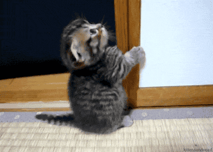

I remember always decorating my house with my parents whenever I got home from school.
This was typically when Halloween was on school days.
I'd come home from the bus stop, walk in the house, put my stuff down, and immediately run out to decorate because it was one of my favourite things to do.
It still is! I love helping put the tombstones up or putting the little objects around them. I love helping keep the animatronics up since sometimes it's windy.
I just love Halloween decorations. As I've said before, we've been known as the cemetery of our neighborhood. I'm glad we live up to that still.
I loved getting my friends to meet up at my house and just become enchanted by the decor. I loved scaring people, I loved seeing people walk up to my mom handing candy out, all of it.
It's something I miss every year before and even after Halloween hits.
I also miss running around like a chicken with its head cut off trying to find good costumes or pieces for said costume.
Stressful, yet fun. Sometimes they don't work out. Sometimes they do. In the end, I still end up with a really cool costume.
I just hope that I can live up to my mom's name and level when I'm older. I can't wait to have my own cemetery.
BACK TO MAIN PAGE